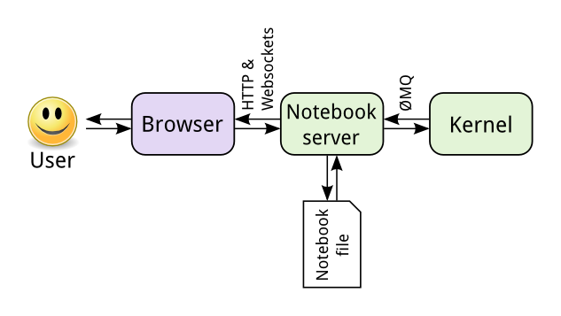

403教室使用說明
Table of Contents
1. 403教室
1.1. Mac mini
- 使用student帳號登入，無需密碼
- 離開教室前 無需 關機或關閉螢幕電源，這些電腦在研習期間每天8:00會自動醒來，每天21:00進入休眠。
1.2. 無線網路
- 無線AP: TNFSH403
- 密碼: 403403403
2. Mac OS教學
2.1. 常用快速鍵
- 複製: Command ⌘ - C
- 貼上: Command ⌘ - V
- 剪下: Command ⌘ - X
- 放大: 貼上: Command ⌘ - +
- 縮小: 貼上: Command ⌘ - -
- 關閉程式: Command ⌘ - Q
- 關閉視窗: Command ⌘ - W
3. Python開發環境
寫Python的工具大概有數十種，以下是其中兩種可以在教室中直接使用的環境： Jupyter Notebook、PyCharm。
3.1. Jupyter Notebook
這是一種網頁式的Python開發環境，網頁只是一個提供你撰寫Python程式的界面，程式的執行由另外的Kernel負責（如圖1）。Jupyter Notebook是一種對Python初學者相對友善的開發環境，因為你可以逐步執行一段一段的程式並觀察執行結果，除錯也相對方便。

Figure 1: Jupyter Notebook架構
在MacOS系統中你可以透過Docker上的Anaconda Navigator來開啟Jupyter Notebook，方式如下：
除了透過Anaconda Navigator來啟動，你也可以透過終端機(Terminal)下指令來啟動Jupyter Notebook，方式如下：
3.2. PyCharm
看名字就知道這是一套專門為Python開發的軟體，不同於Jupyter Notebook借用瀏覽器來當成開發環境，PyCharm是一種整合式開發環境(IDE)，除了提供撰寫Python程式的環境，它還提供代碼分析、圖形化除錯器，整合測試器、整合版本控制系統，並支援使用Django進行網頁開發。
在MacOS系統中你可以透過Docker上的Anaconda Navigator來啟動PyCharm，或是直接點選Docker上的PyCharm(如果有的話)。
4. Intel OpenVINO 開發環境
模型(Model)是AI應用的核心，模型的取得可以是開發者自行設計後再以大量資料進行訓練，也可以直接使用其他人已經訓練好的模型。
Intel® Distribution of OpenVINO™ Toolkit 是一套功能完善的開發工具，能幫助開發者建置新的AI專案，將您用TensorFlow、PyTorch等AI框架訓練好的模型最佳化，得到高效率的推論結果，而且很容易移植運用。Intel® OpenVINO™ Toolkit 包含了 Model Optimizer 及 Runtime 開發工具，能夠調整、最佳化並執行全面性的 AI Inference。進一步的學習資訊請自行閱讀相關教學文章。
4.1. 啟用教室中的OpenVINO支援環境
教室中的MacOS系統已事先建置了支援Intel OpenVINO的Python執行環境，你可以打開Docker上的終端機，輸入以下指令
conda activate openvino jupyter notebook
4.2. 重新建立conda openvino環境
基於某種不知名的原因，這個環境偶爾會失效，你可以自行重建，方式很簡單：開啟終端機、貼上以下指令、輸入Y、然後等待(很長一段時間)直到終端機的提示符號再次出現
jupyter kernelspec uninstall openvino -y conda env remove -n openvino conda create -n openvino python=3.7 -y conda activate openvino pip3 install numpy==1.15 pip3 uninstall mkl-service -y pip3 install mkl-service pip3 install matplotlib conda install openvino-ie4py -c intel -y pip3 install opencv-python pip3 install openvino-dev conda install matplotlib -y conda install tensorflow -y conda install -c anaconda ipykernel -y python -m ipykernel install --user --name=openvino
5. NCS2 Stick
英特爾NCS 2由最新一代的英特爾VPU（視覺處理單元）支持–英特爾Movidius Myriad X VPU。這是第一個具有神經計算引擎的VPU，可提供額外的性能。諸如Caffe，Tensor Flow或MXNet之類的深度學習神經網絡可以與NCS2上的OpenVINO工具包集成。這些機器學習框架針對全新的深度神經網絡（DNN）推理引擎進行了優化，該引擎提供的性能是前一代的八倍。
借助電腦和Intel NCS2，開發人員可以啟動其AI和計算機視覺應用的開發，並在幾分鐘內執行。英特爾NCS2在標準USB 3.0上運行，不需要其他硬體，從而使用戶能夠無縫轉換由電腦訓練好的模型，然後將其部署到各種邊緣設備而不需連網或連雲。無論是開發智能相機，具有手勢識別功能的無人機，工業機器人，還是下一代智能家居設備，英特爾神經計算棒2都能為開發人員提供更快原型所需的功能。
Figure 2: Intel NCS2運算棒
5.1. 安裝
如果你要在教室的MacMini上使用Intel NCS2，請先將發到各組的USB hub插到MAC鍵盤左側的USB插槽中，再將NCS2插入USB hub，如下圖所示。
Figure 3: NCS2安裝方式
5.2. MacOS系統 找不到NCS2解決方案
如果你的Python程式在辨識NCS2時出現錯誤，先試著 重新插、拔NCS2 Stick ，若仍無法解決，可以試著重新安裝USB系統套件。流程非常簡單：開啟Docker上的終端機，輸入以下指令
brew install libusb
6. Python專案環境管理: conda
- 查詢現有環境
conda env list
- 建立新環境
1: conda create --name ai4y python==3.7
- 啟用conda環境
1: conda activate ai4y
- 離開conda環境
1: conda deactivate